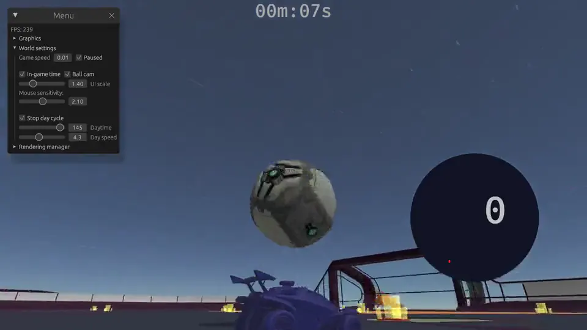
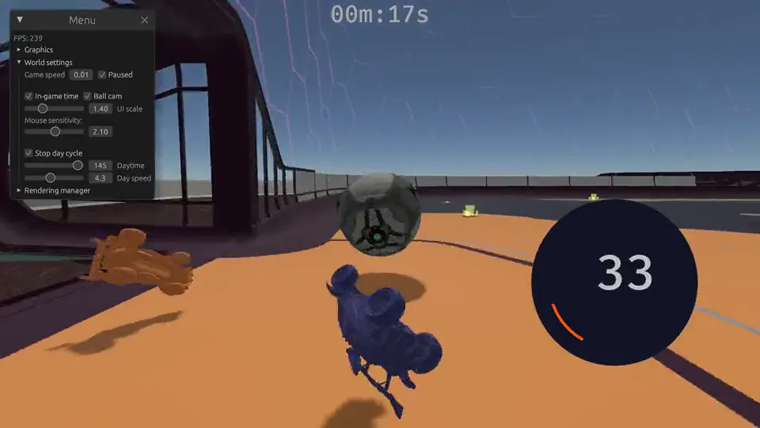

Reinforcement Learning Bot
An agent that learns to play a 1v1 match by playing it, trained with PPO inside a physics simulator. I built it with real engineering discipline, so every run is reproducible and every experiment is tracked.
An agent that learns by playing.
There is no dataset of correct moves here. The agent starts knowing nothing, plays the game, and only gets a reward signal telling it how well that went. Over millions of steps, it works out a policy on its own. It is trained with PPO in a 1v1 self-play match inside rlgym_sim, and every run is defined by one YAML config and logged to wandb.

Reward is the only teacher.
The reward function is the real design work in reinforcement learning. Get it wrong and the agent learns something technically rewarding but useless, so I kept the components separate and combinable to tune the behavior deliberately.
These are the weights from the two staged YAML configs in the repo. They are chosen hyperparameters, not measurements, and they span 0.02 to 12.0, so they are listed rather than charted.
The interesting part is what shrinks. Moving toward the ball is worth 0.10 while the agent cannot play, and 0.03 once it can, so the shaping reward is deliberately withdrawn and the agent has to actually score instead of farming the easy signal. The whole thing is wrapped in a zero-sum reward, so what one side gains the other loses, which keeps self-play honest instead of letting both agents settle into a comfortable draw.
Reward weights · the two-stage curriculum
| Component | Stage 1basics | Stage 2offense |
|---|---|---|
| Velocity toward ball | +0.10 | +0.03 |
| Face ball | +0.05 | not used |
| Touch ball | not used | +0.05 |
| Ball velocity to goal | +0.30 | +0.60 |
| Goal scored | +8.00 | +12.00 |
| Conceding a goal | -8.00 | -12.00 |
| Shot | +0.80 | +1.80 |
| Save | not used | +3.60 |
| Demo | +0.80 | +1.20 |
Why PPO
- A policy-gradient method that clips how far the policy can move in a single update.
- That clip is what makes it stable enough to train for a long time without collapsing.
- Which is exactly what a self-play agent needs.
Modular by design
- Rewards, observations, actions and state setters are separate components.
- So I can swap one and rerun without touching the rest.
- Curriculum state setters let the agent start from easier situations before facing full matches.
Every piece swappable.

Not a script on my laptop.
Reinforcement learning runs are long, expensive, and easy to lose track of. I treated this like a real ML project from day one, so any result can be traced back to the exact code and config that produced it.
- 01
- ReproducibilityPinned dependencies, deterministic seeds, and every run fully defined by a single YAML config.
- 02
- VersioningCheckpoints saved together with their config, git commit, and the run that produced them.
- 03
- Experiment trackingwandb integration, so every iteration's metrics are logged and runs can be compared directly.
- 04
- Testing & CIUnit tests on rewards, configs, and the env build, with GitHub Actions running lint, type checks, and tests on every push.
Learning without a label.
This project is where the theory from the course became concrete: value versus policy methods, exploration against exploitation, and how much of reinforcement learning is really reward design and patience. It is also the project where the engineering around the model mattered as much as the model itself.